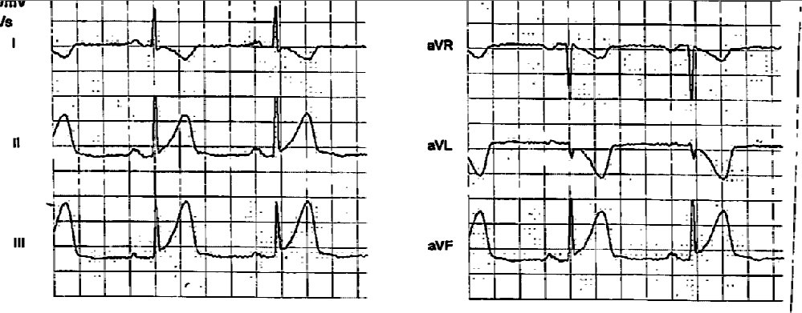
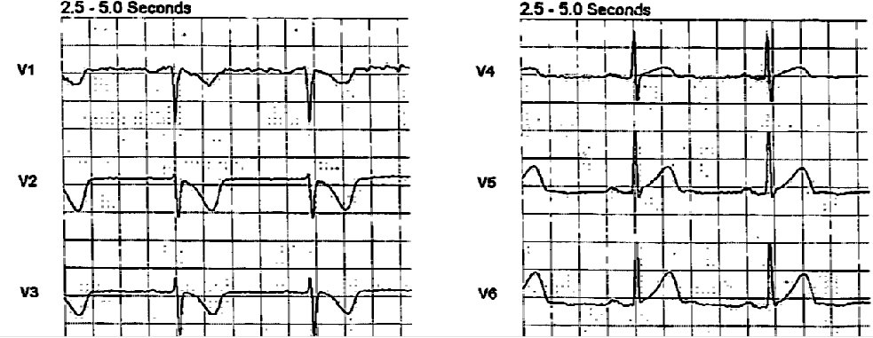
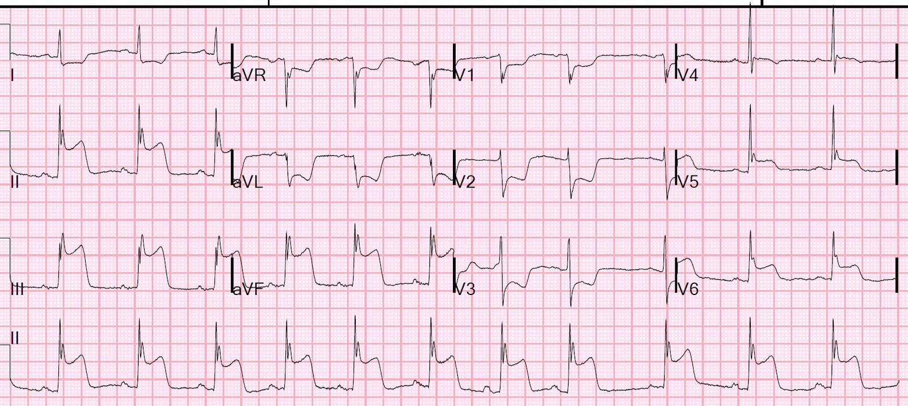
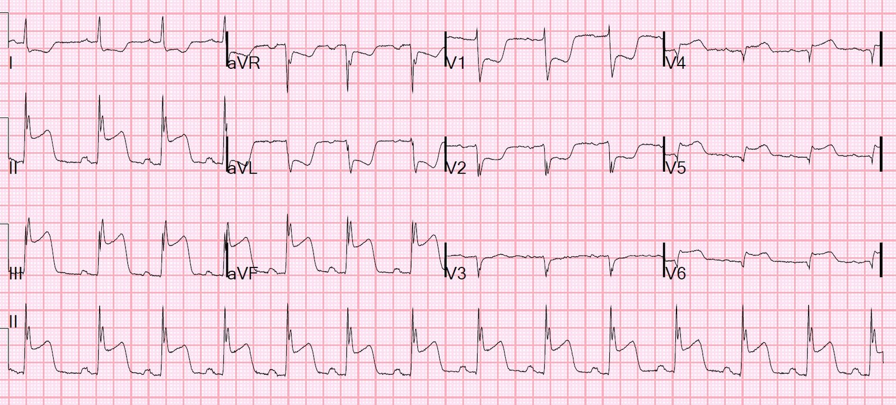
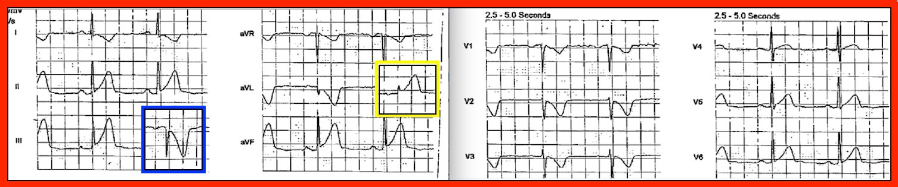
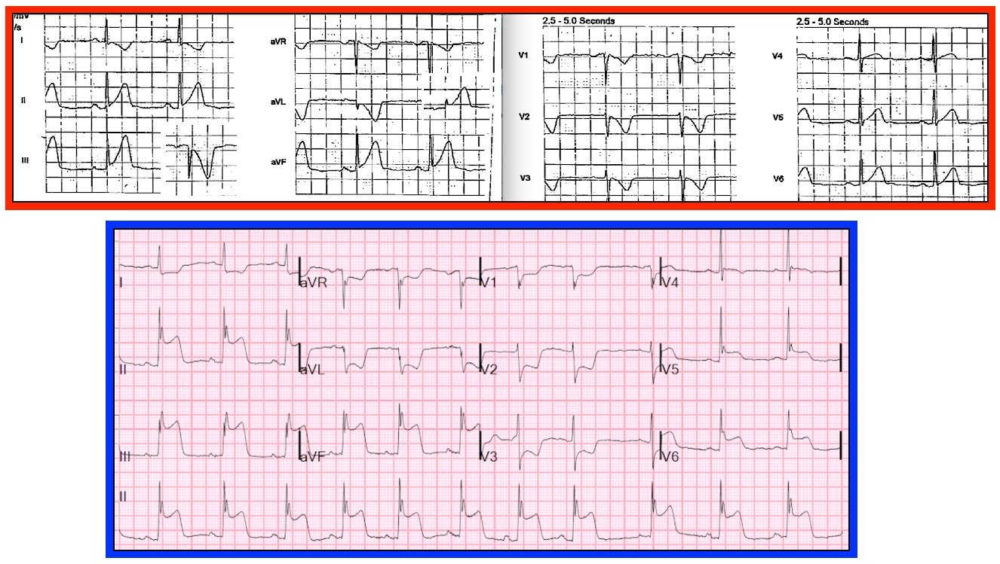

11/07/2018 — Có nhồi máu thất phải kèm theo nhồi máu cơ tim dưới-sau-bên không?
Bản dịch tiếng Việt của bài "Is there a Right Ventricular MI in addition to Infero-postero-lateral MI?" – Dr. Smith’s ECG Blog. Giữ nguyên toàn bộ 9 hình ảnh và 1 video của bản gốc.
Một phụ nữ 40 mấy tuổi đột ngột đau ngực. Bà gọi 911. Điện tâm đồ trước viện này đã được ghi:
Đây là các chuyển đạo chi:


Đây là các chuyển đạo trước tim:


Dĩ nhiên điện tâm đồ này chẩn đoán nhồi máu cơ tim do tắc mạch vành cấp (OMI), đồng thời cũng đạt tiêu chuẩn STEMI.
Nhưng những thành cơ tim nào bị ảnh hưởng?
Thành dưới
Thành sau (biểu hiện bằng sóng T đảo ngược)
Thành bên (ST chênh lên kín đáo)
Có kèm nhồi máu thất phải (RV MI) không? Bạn có thể biết được từ điện tâm đồ này không? (gợi ý: không, bạn không thể biết được từ điện tâm đồ này)
Khi ca này được đưa cho tôi xem, tôi nói “Hãy kích hoạt phòng thông tim (cath lab).”
Các nhân viên y tế đã còn phân vân cho tới khi tôi đưa ra ý kiến, nhưng sau đó đã tiến hành kích hoạt.
Sau đó điện tâm đồ này được ghi tại khoa cấp cứu (ED), 10 phút sau điện tâm đồ đầu tiên:


Nhiều nhồi máu cơ tim thành dưới đi kèm nhồi máu thất phải. Ở đây có nhồi máu thất phải không?
Điện tâm đồ 12 chuyển đạo bên trái không hoàn hảo cho việc chẩn đoán nhồi máu thất phải. Đúng tuần ca này đến, tôi đã nộp bản sửa của một bản thảo đang được xem xét, trong đó chúng tôi nhận thấy:
1) ST chênh xuống ở chuyển đạo I vô dụng trong việc phân biệt tắc RCA có so với không có nhồi máu thất phải
2) ST chênh lên ở V1 khá đặc hiệu (~83%) cho nhồi máu thất phải trong bối cảnh nhồi máu cơ tim thành dưới.
3) ST chênh lên ở V1 không nhạy cho nhồi máu thất phải (RVMI), và rất kém nhạy nếu có ST chênh xuống ở V2 (nhồi máu thành sau kéo đoạn ST xuống và triệt tiêu mọi ST chênh lên lẽ ra có thể hiện diện ở V1 khi có nhồi máu thất phải).
Vì vậy, nếu bạn có thời gian trong lúc chờ đội chụp mạch, bạn nên ghi điện tâm đồ bên phải, vì nhồi máu thất phải có tỷ lệ tử vong cao hơn, dễ bị tụt huyết áp hơn, và nhạy cảm với nitroglycerin hơn.
Vì thế chúng tôi đã ghi điện tâm đồ bên phải:


V2 = V2R = cùng vị trí với V1 trên điện tâm đồ bên trái
V3 = V3R
v.v.
Bây giờ bạn có thể thấy có nhiều ST chênh lên ở V4R-V6R, chẩn đoán nhồi máu thất phải.
Khi chụp mạch vành, có tổn thương thủ phạm ngay phía xa nhánh bờ thất phải (không phải phía gần), và vì vậy nó được gọi là tắc RCA đoạn giữa. Theo điện tâm đồ, lẽ ra đây phải là tắc đoạn gần, ở phía gần so với nhánh bờ thất phải.
Tôi thấy kết quả này vào ngày hôm sau và nó làm tôi bối rối, nên tôi đã hỏi các bác sĩ tim mạch.
Hôm nay, họ đã xem lại phim chụp mạch vành và kết luận rằng huyết khối ở RCA đoạn giữa hẳn đã lan về phía gần từ mảng xơ vữa thủ phạm bị nứt vỡ, lan tới phía gần so với nhánh bờ thất phải và tạm thời làm tắc nhánh này. Tuy nhiên, đến thời điểm chụp mạch vành thì huyết khối đã trôi xuống phía xa (thuyên tắc), và việc này chỉ xảy ra sau khi điện tâm đồ bên phải đã được ghi.
Xem ca này, trong đó tôi thấy ST chênh lên ở V1 và đã gọi cho bác sĩ chụp mạch để đề nghị anh ấy xem kỹ hơn phim chụp mạch vành. Anh ấy đã làm vậy, tìm ra thủ phạm thực sự, và quay lại can thiệp để đặt stent cho nó.
Nhồi máu thất phải thấy trên điện tâm đồ giúp bác sĩ chụp mạch tìm ra tổn thương thủ phạm
Đây là điện tâm đồ. Bạn có thể nghe phần giải thích của tôi bằng cách bật video.
Những điểm cần học:
1. Để chẩn đoán nhồi máu thất phải một cách tin cậy, bạn cần điện tâm đồ bên phải.
2. Trong nhồi máu cơ tim thành dưới, ST chênh lên ở V1 đặc hiệu cho nhồi máu thất phải. Các trường hợp âm tính giả có thể một phần là do phim chụp mạch vành gây hiểu nhầm!
3. Trong nhồi máu cơ tim thành dưới, ST chênh lên ở V1 không nhạy cho nhồi máu thất phải, và đặc biệt kém nhạy khi có ST chênh xuống (do nhồi máu thành sau) ở V2.
4. ST chênh xuống ở chuyển đạo I KHÔNG hữu ích trong việc xác định có nhồi máu thất phải hay không
5. Tình trạng của động mạch vành tại thời điểm chụp mạch có thể khác với tình trạng của nó 30 phút trước đó, lúc ghi điện tâm đồ.

==================================
BÌNH LUẬN CỦA TÔI, bởi KEN GRAUER, MD (11/7/2018):
==================================
Bài blog sâu sắc của Dr. Smith về các tiêu chuẩn điện tâm đồ để nhận biết tổn thương thất phải cấp ở bệnh nhân STEMI thành dưới. Tôi sẽ nêu bật thêm một vài điểm:
- Như Dr. Smith đã nói — điện tâm đồ đầu tiên chẩn đoán nhồi máu cơ tim do tắc mạch vành cấp (OMI). Bản ghi đầu tiên này là một ví dụ tuyệt vời về thay đổi ST-T tối cấp (hyperacute). Ý chúng tôi là, dù ST chênh lên còn tương đối ít — sóng T ở mỗi chuyển đạo thành dưới lại cực kỳ nổi bật, và to bè hơn dự kiến nhiều ở đỉnh. Gần như bạn có thể hình dung đỉnh sóng T nổi bật đang bắt đầu nâng đoạn ST lên — điều sau đó trở nên rõ ràng một cách ngoạn mục ở điện tâm đồ thứ 2 ghi tại khoa cấp cứu chỉ 10 phút ngắn ngủi sau đó! Tôi thấy thật khiêm nhường khi nhận ra thay đổi ST-T cấp đôi khi có thể tiến triển NHANH đến mức nào …
- Thay đổi ST-T tối cấp chỉ thoáng qua. Ở ca này, chúng đã biến mất trong vòng 10 phút. Lý do việc nhận ra thay đổi tối cấp trong khoảng thời gian ngắn ngủi chúng hiện diện lại quan trọng đến vậy — là khi chúng được thấy theo “nhóm chuyển đạo” (tức là ở cả 3 chuyển đạo thành dưới), đi kèm thay đổi soi gương (reciprocal) — chúng có thể chẩn đoán OMI cấp trước khi xuất hiện ST chênh lên rõ rệt.
- Sự xác nhận rằng các thay đổi nghi là tối cấp là có thật — sẽ đến khi bạn nhận ra thay đổi soi gương dạng hình ảnh phản chiếu (Hình 1). Với STEMI thành dưới cấp — có một hình ảnh “soi gương” (mirror-image) gần như kỳ diệu của ST-T ở chuyển đạo III so với chuyển đạo aVL. Để thấy rõ hơn khái niệm này — tôi đã đặt hình soi gương của chuyển đạo III trong hình chữ nhật XANH LAM — và hình soi gương của chuyển đạo aVL trong hình chữ nhật VÀNG. Như vậy, chuyển đạo aVL cho thấy ST-T chênh xuống soi gương cũng có thể biểu hiện một hình ảnh tối cấp như thế nào.
- Thay đổi tối cấp cũng được thấy ở các chuyển đạo khác trong Hình 1. Lưu ý chuyển đạo V6 cho thấy đỉnh sóng T lớn bất tương xứng và to bè hơn dự kiến như thế nào. Thảo nào hình ảnh này ở V6 chẳng bao lâu sau đã tiến triển thành ST chênh lên đáng kể ở điện tâm đồ thứ 2. Thay đổi tối cấp kín đáo hơn ở chuyển đạo V5 — nhưng xét theo khái niệm “chuyển đạo lân cận”, chúng vẫn hiện diện. Nghĩa là, đoạn ST ở chuyển đạo V4 rõ ràng bất thường (tức là dạng vòm thay vì dạng lõm) — nên hình ảnh ST-T ở V5 phản ánh một sự “chuyển tiếp” giữa những gì ta thấy ở hai chuyển đạo lân cận V4 và V6.
- Cuối cùng — các chuyển đạo V2 và V3 trong Hình 1 biểu hiện hình dạng ST-T tương tự như ở chuyển đạo aVL. Điều này phản ánh hình ảnh ST-T soi gương phản chiếu ở các chuyển đạo thành trước, vốn rất thường gặp đi kèm OMI dưới-sau cấp.


So sánh 2 bản ghi đầu tiên:
Thật thú vị khi theo dõi sự tiến triển của các thay đổi tối cấp thấy ở điện tâm đồ đầu tiên. Để thuận tiện cho việc so sánh này — tôi đã đặt cả hai hình vào cùng một hình (Hình 2).
- Lưu ý rằng mọi chuyển đạo có thay đổi tối cấp ở điện tâm đồ đầu tiên (trong hình chữ nhật ĐỎ) — nay đều cho thấy ST lệch khỏi đường nền một cách ngoạn mục (chênh lên hoặc chênh xuống) ở bản ghi thứ 2 (trong hình chữ nhật XANH LAM).
- Việc định vị “động mạch thủ phạm” là RCA được gợi ý ở điện tâm đồ thứ 2 bởi: i) ST chênh lên ở chuyển đạo III nhiều hơn chuyển đạo II (điều ngược lại thường đúng khi LCx là động mạch thủ phạm); ii) ST chênh xuống soi gương rõ ở chuyển đạo aVL; và iii) ST chênh lên ở chuyển đạo V6 ít hơn so với những gì thấy ở các chuyển đạo thành dưới.
- Như Dr. Smith đã nói — cần các chuyển đạo bên phải để chẩn đoán tổn thương thất phải cấp. Tuy nhiên, một khi các chuyển đạo bên phải đã xác nhận có kèm nhồi máu thất phải — việc xác định RCA là “động mạch thủ phạm” được củng cố vững chắc.



T.B. (P.S.) (15/7/2018): Trong một bài đăng ngày 11 tháng Bảy lên EKG Club — Peter Calvert đã nêu một điểm rất hay về sự xuất hiện sóng J nổi bật ở điện tâm đồ thứ 2 — lưu ý rằng không thấy sóng J nào ở điện tâm đồ đầu tiên (Hình 2). Nhận xét tinh tường của anh ấy đáng được bàn luận ngắn gọn:
- Rituparna và cs. ghi nhận một báo cáo ca bệnh, trong đó sóng J dường như được gây ra bởi thiếu máu cục bộ (Pacing Clin Electrophysiol 30(6):817-819, 2007). Cơ chế được đề xuất khá phức tạp. Kết luận “cốt lõi” của báo cáo ca bệnh này là sóng J thoáng qua đôi khi có thể được gây ra bởi dòng tổn thương cấp do nhồi máu cơ tim sắp xảy ra. Nhận ra những sóng J như vậy có thể giúp định vị “động mạch thủ phạm” có khả năng. Sự hiện diện của những sóng J như vậy có thể đi kèm rối loạn nhịp thất ác tính.
- Ở Hình 2 — sóng J nổi bật được thấy ở mỗi chuyển đạo có ST chênh lên. Ngoài ra, có khía nổi bật ở chỗ khởi đầu ST chênh xuống ở chuyển đạo aVR. Xét việc không có sóng J ở bản ghi trước viện — chắc chắn có vẻ như những sóng J này là do thiếu máu cục bộ gây ra, và là dấu chỉ điểm của “động mạch thủ phạm”. Trong tương lai — tôi sẽ để ý tìm dấu hiệu điện tâm đồ thú vị này! (Xem T.B. bên dưới)
====================
T.B.T.B. (P.P.S.): Tôi tin rằng mình đã tìm được một ví dụ khác về sóng J do thiếu máu cục bộ gây ra (Xem ECG Blog ngày 24 tháng Mười năm 2018 — Vui lòng cuộn xuống cuối trang tới phần BÌNH LUẬN CỦA TÔI, trong mục “Vượt ra ngoài phần cốt lõi” …).